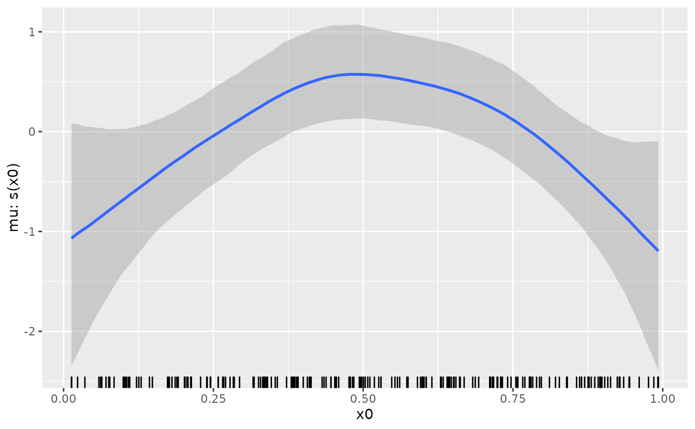
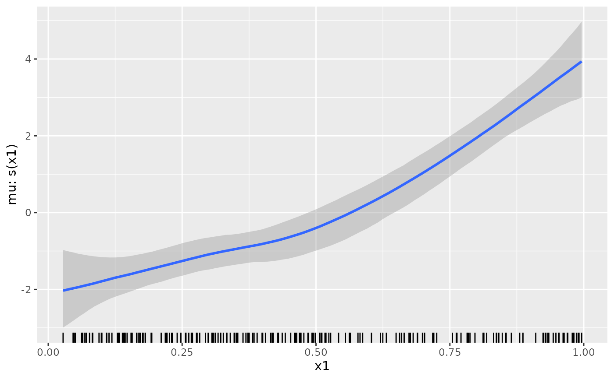
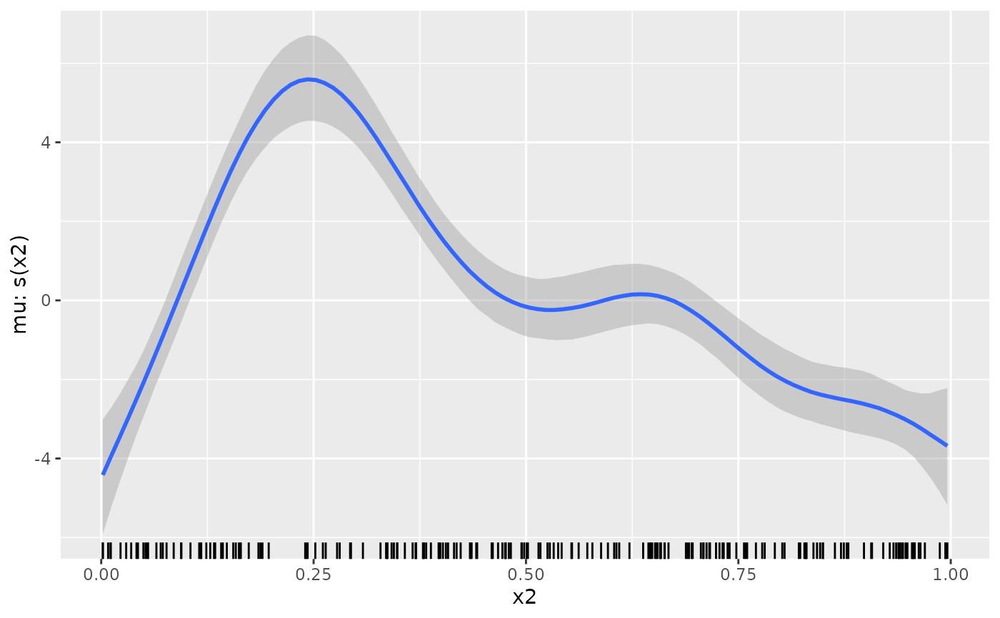
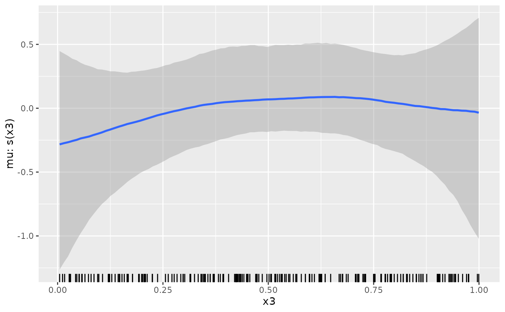
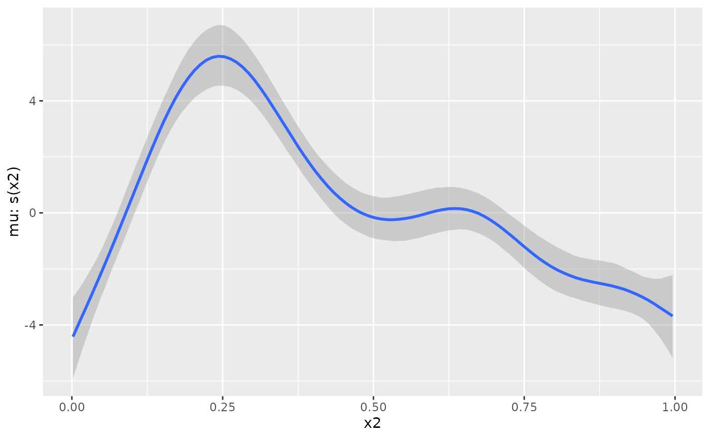
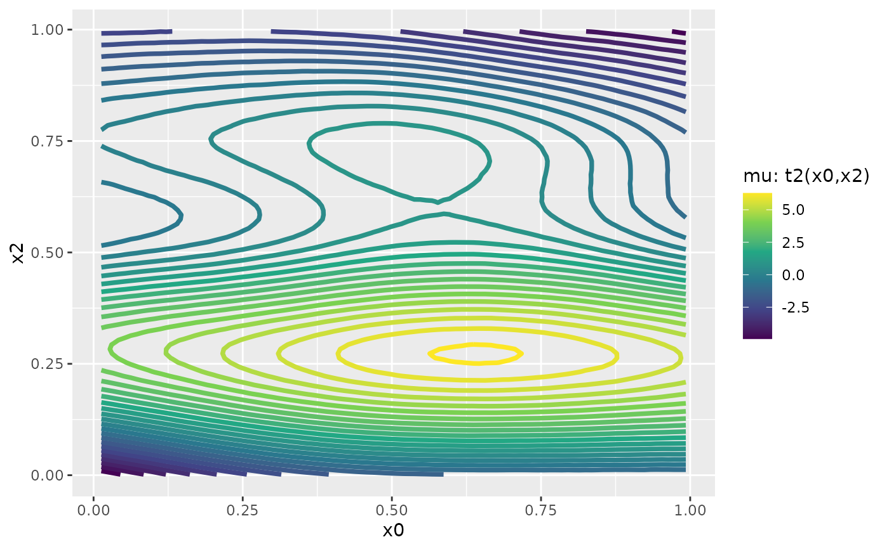
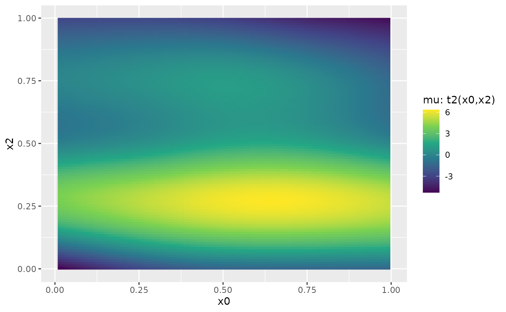

Display smooth s and t2 terms of models
fitted with brms.
Usage
# S3 method for class 'brmsfit'
conditional_smooths(
x,
smooths = NULL,
int_conditions = NULL,
prob = 0.95,
spaghetti = FALSE,
surface = TRUE,
resolution = 100,
too_far = 0,
ndraws = NULL,
draw_ids = NULL,
nsamples = NULL,
subset = NULL,
probs = NULL,
...
)
conditional_smooths(x, ...)Arguments
- x
An object of class
brmsfit.- smooths
Optional character vector of smooth terms to display. If
NULL(the default) all smooth terms are shown.- int_conditions
An optional named
listwhose elements are vectors of values of the variables specified ineffects. At these values, predictions are evaluated. The names ofint_conditionshave to match the variable names exactly. Additionally, the elements of the vectors may be named themselves, in which case their names appear as labels for the conditions in the plots. Instead of vectors, functions returning vectors may be passed and are applied on the original values of the corresponding variable. IfNULL(the default), predictions are evaluated at the \(mean\) and at \(mean +/- sd\) for numeric predictors and at all categories for factor-like predictors.- prob
A value between 0 and 1 indicating the desired probability to be covered by the uncertainty intervals. The default is 0.95.
- spaghetti
Logical. Indicates if predictions should be visualized via spaghetti plots. Only applied for numeric predictors. If
TRUE, it is recommended to set argumentndrawsto a relatively small value (e.g.,100) in order to reduce computation time.- surface
Logical. Indicates if interactions or two-dimensional smooths should be visualized as a surface. Defaults to
TRUE. The surface type can be controlled via argumentstypeof the related plotting method.- resolution
Number of support points used to generate the plots. Higher resolution leads to smoother plots. Defaults to
100. IfsurfaceisTRUE, this implies10000support points for interaction terms, so it might be necessary to reduceresolutionwhen only few RAM is available.- too_far
Positive number. For surface plots only: Grid points that are too far away from the actual data points can be excluded from the plot.
too_fardetermines what is too far. The grid is scaled into the unit square and then grid points more thantoo_farfrom the predictor variables are excluded. By default, all grid points are used. Ignored for non-surface plots.- ndraws
Positive integer indicating how many posterior draws should be used. If
NULL(the default) all draws are used. Ignored ifdraw_idsis notNULL.- draw_ids
An integer vector specifying the posterior draws to be used. If
NULL(the default), all draws are used.- nsamples
Deprecated alias of
ndraws.- subset
Deprecated alias of
draw_ids.- probs
(Deprecated) The quantiles to be used in the computation of uncertainty intervals. Please use argument
probinstead.- ...
Currently ignored.
Value
For the brmsfit method,
an object of class brms_conditional_effects. See
conditional_effects for
more details and documentation of the related plotting function.
Examples
# \dontrun{
set.seed(0)
dat <- mgcv::gamSim(1, n = 200, scale = 2)
#> Gu & Wahba 4 term additive model
fit <- brm(y ~ s(x0) + s(x1) + s(x2) + s(x3), data = dat)
#> Compiling Stan program...
#> Start sampling
#>
#> SAMPLING FOR MODEL 'anon_model' NOW (CHAIN 1).
#> Chain 1:
#> Chain 1: Gradient evaluation took 0.000433 seconds
#> Chain 1: 1000 transitions using 10 leapfrog steps per transition would take 4.33 seconds.
#> Chain 1: Adjust your expectations accordingly!
#> Chain 1:
#> Chain 1:
#> Chain 1: Iteration: 1 / 2000 [ 0%] (Warmup)
#> Chain 1: Iteration: 200 / 2000 [ 10%] (Warmup)
#> Chain 1: Iteration: 400 / 2000 [ 20%] (Warmup)
#> Chain 1: Iteration: 600 / 2000 [ 30%] (Warmup)
#> Chain 1: Iteration: 800 / 2000 [ 40%] (Warmup)
#> Chain 1: Iteration: 1000 / 2000 [ 50%] (Warmup)
#> Chain 1: Iteration: 1001 / 2000 [ 50%] (Sampling)
#> Chain 1: Iteration: 1200 / 2000 [ 60%] (Sampling)
#> Chain 1: Iteration: 1400 / 2000 [ 70%] (Sampling)
#> Chain 1: Iteration: 1600 / 2000 [ 80%] (Sampling)
#> Chain 1: Iteration: 1800 / 2000 [ 90%] (Sampling)
#> Chain 1: Iteration: 2000 / 2000 [100%] (Sampling)
#> Chain 1:
#> Chain 1: Elapsed Time: 5.954 seconds (Warm-up)
#> Chain 1: 4.897 seconds (Sampling)
#> Chain 1: 10.851 seconds (Total)
#> Chain 1:
#>
#> SAMPLING FOR MODEL 'anon_model' NOW (CHAIN 2).
#> Chain 2:
#> Chain 2: Gradient evaluation took 4.1e-05 seconds
#> Chain 2: 1000 transitions using 10 leapfrog steps per transition would take 0.41 seconds.
#> Chain 2: Adjust your expectations accordingly!
#> Chain 2:
#> Chain 2:
#> Chain 2: Iteration: 1 / 2000 [ 0%] (Warmup)
#> Chain 2: Iteration: 200 / 2000 [ 10%] (Warmup)
#> Chain 2: Iteration: 400 / 2000 [ 20%] (Warmup)
#> Chain 2: Iteration: 600 / 2000 [ 30%] (Warmup)
#> Chain 2: Iteration: 800 / 2000 [ 40%] (Warmup)
#> Chain 2: Iteration: 1000 / 2000 [ 50%] (Warmup)
#> Chain 2: Iteration: 1001 / 2000 [ 50%] (Sampling)
#> Chain 2: Iteration: 1200 / 2000 [ 60%] (Sampling)
#> Chain 2: Iteration: 1400 / 2000 [ 70%] (Sampling)
#> Chain 2: Iteration: 1600 / 2000 [ 80%] (Sampling)
#> Chain 2: Iteration: 1800 / 2000 [ 90%] (Sampling)
#> Chain 2: Iteration: 2000 / 2000 [100%] (Sampling)
#> Chain 2:
#> Chain 2: Elapsed Time: 5.925 seconds (Warm-up)
#> Chain 2: 4.923 seconds (Sampling)
#> Chain 2: 10.848 seconds (Total)
#> Chain 2:
#>
#> SAMPLING FOR MODEL 'anon_model' NOW (CHAIN 3).
#> Chain 3:
#> Chain 3: Gradient evaluation took 4.1e-05 seconds
#> Chain 3: 1000 transitions using 10 leapfrog steps per transition would take 0.41 seconds.
#> Chain 3: Adjust your expectations accordingly!
#> Chain 3:
#> Chain 3:
#> Chain 3: Iteration: 1 / 2000 [ 0%] (Warmup)
#> Chain 3: Iteration: 200 / 2000 [ 10%] (Warmup)
#> Chain 3: Iteration: 400 / 2000 [ 20%] (Warmup)
#> Chain 3: Iteration: 600 / 2000 [ 30%] (Warmup)
#> Chain 3: Iteration: 800 / 2000 [ 40%] (Warmup)
#> Chain 3: Iteration: 1000 / 2000 [ 50%] (Warmup)
#> Chain 3: Iteration: 1001 / 2000 [ 50%] (Sampling)
#> Chain 3: Iteration: 1200 / 2000 [ 60%] (Sampling)
#> Chain 3: Iteration: 1400 / 2000 [ 70%] (Sampling)
#> Chain 3: Iteration: 1600 / 2000 [ 80%] (Sampling)
#> Chain 3: Iteration: 1800 / 2000 [ 90%] (Sampling)
#> Chain 3: Iteration: 2000 / 2000 [100%] (Sampling)
#> Chain 3:
#> Chain 3: Elapsed Time: 5.918 seconds (Warm-up)
#> Chain 3: 4.935 seconds (Sampling)
#> Chain 3: 10.853 seconds (Total)
#> Chain 3:
#>
#> SAMPLING FOR MODEL 'anon_model' NOW (CHAIN 4).
#> Chain 4:
#> Chain 4: Gradient evaluation took 4.1e-05 seconds
#> Chain 4: 1000 transitions using 10 leapfrog steps per transition would take 0.41 seconds.
#> Chain 4: Adjust your expectations accordingly!
#> Chain 4:
#> Chain 4:
#> Chain 4: Iteration: 1 / 2000 [ 0%] (Warmup)
#> Chain 4: Iteration: 200 / 2000 [ 10%] (Warmup)
#> Chain 4: Iteration: 400 / 2000 [ 20%] (Warmup)
#> Chain 4: Iteration: 600 / 2000 [ 30%] (Warmup)
#> Chain 4: Iteration: 800 / 2000 [ 40%] (Warmup)
#> Chain 4: Iteration: 1000 / 2000 [ 50%] (Warmup)
#> Chain 4: Iteration: 1001 / 2000 [ 50%] (Sampling)
#> Chain 4: Iteration: 1200 / 2000 [ 60%] (Sampling)
#> Chain 4: Iteration: 1400 / 2000 [ 70%] (Sampling)
#> Chain 4: Iteration: 1600 / 2000 [ 80%] (Sampling)
#> Chain 4: Iteration: 1800 / 2000 [ 90%] (Sampling)
#> Chain 4: Iteration: 2000 / 2000 [100%] (Sampling)
#> Chain 4:
#> Chain 4: Elapsed Time: 5.462 seconds (Warm-up)
#> Chain 4: 4.853 seconds (Sampling)
#> Chain 4: 10.315 seconds (Total)
#> Chain 4:
#> Warning: There were 6 divergent transitions after warmup. See
#> https://mc-stan.org/misc/warnings.html#divergent-transitions-after-warmup
#> to find out why this is a problem and how to eliminate them.
#> Warning: Examine the pairs() plot to diagnose sampling problems
# show all smooth terms
plot(conditional_smooths(fit), rug = TRUE, ask = FALSE)




# show only the smooth term s(x2)
plot(conditional_smooths(fit, smooths = "s(x2)"), ask = FALSE)

# fit and plot a two-dimensional smooth term
fit2 <- brm(y ~ t2(x0, x2), data = dat)
#> Compiling Stan program...
#> Start sampling
#>
#> SAMPLING FOR MODEL 'anon_model' NOW (CHAIN 1).
#> Chain 1:
#> Chain 1: Gradient evaluation took 7.1e-05 seconds
#> Chain 1: 1000 transitions using 10 leapfrog steps per transition would take 0.71 seconds.
#> Chain 1: Adjust your expectations accordingly!
#> Chain 1:
#> Chain 1:
#> Chain 1: Iteration: 1 / 2000 [ 0%] (Warmup)
#> Chain 1: Iteration: 200 / 2000 [ 10%] (Warmup)
#> Chain 1: Iteration: 400 / 2000 [ 20%] (Warmup)
#> Chain 1: Iteration: 600 / 2000 [ 30%] (Warmup)
#> Chain 1: Iteration: 800 / 2000 [ 40%] (Warmup)
#> Chain 1: Iteration: 1000 / 2000 [ 50%] (Warmup)
#> Chain 1: Iteration: 1001 / 2000 [ 50%] (Sampling)
#> Chain 1: Iteration: 1200 / 2000 [ 60%] (Sampling)
#> Chain 1: Iteration: 1400 / 2000 [ 70%] (Sampling)
#> Chain 1: Iteration: 1600 / 2000 [ 80%] (Sampling)
#> Chain 1: Iteration: 1800 / 2000 [ 90%] (Sampling)
#> Chain 1: Iteration: 2000 / 2000 [100%] (Sampling)
#> Chain 1:
#> Chain 1: Elapsed Time: 0.961 seconds (Warm-up)
#> Chain 1: 1.001 seconds (Sampling)
#> Chain 1: 1.962 seconds (Total)
#> Chain 1:
#>
#> SAMPLING FOR MODEL 'anon_model' NOW (CHAIN 2).
#> Chain 2:
#> Chain 2: Gradient evaluation took 3.8e-05 seconds
#> Chain 2: 1000 transitions using 10 leapfrog steps per transition would take 0.38 seconds.
#> Chain 2: Adjust your expectations accordingly!
#> Chain 2:
#> Chain 2:
#> Chain 2: Iteration: 1 / 2000 [ 0%] (Warmup)
#> Chain 2: Iteration: 200 / 2000 [ 10%] (Warmup)
#> Chain 2: Iteration: 400 / 2000 [ 20%] (Warmup)
#> Chain 2: Iteration: 600 / 2000 [ 30%] (Warmup)
#> Chain 2: Iteration: 800 / 2000 [ 40%] (Warmup)
#> Chain 2: Iteration: 1000 / 2000 [ 50%] (Warmup)
#> Chain 2: Iteration: 1001 / 2000 [ 50%] (Sampling)
#> Chain 2: Iteration: 1200 / 2000 [ 60%] (Sampling)
#> Chain 2: Iteration: 1400 / 2000 [ 70%] (Sampling)
#> Chain 2: Iteration: 1600 / 2000 [ 80%] (Sampling)
#> Chain 2: Iteration: 1800 / 2000 [ 90%] (Sampling)
#> Chain 2: Iteration: 2000 / 2000 [100%] (Sampling)
#> Chain 2:
#> Chain 2: Elapsed Time: 1.02 seconds (Warm-up)
#> Chain 2: 0.819 seconds (Sampling)
#> Chain 2: 1.839 seconds (Total)
#> Chain 2:
#>
#> SAMPLING FOR MODEL 'anon_model' NOW (CHAIN 3).
#> Chain 3:
#> Chain 3: Gradient evaluation took 3.9e-05 seconds
#> Chain 3: 1000 transitions using 10 leapfrog steps per transition would take 0.39 seconds.
#> Chain 3: Adjust your expectations accordingly!
#> Chain 3:
#> Chain 3:
#> Chain 3: Iteration: 1 / 2000 [ 0%] (Warmup)
#> Chain 3: Iteration: 200 / 2000 [ 10%] (Warmup)
#> Chain 3: Iteration: 400 / 2000 [ 20%] (Warmup)
#> Chain 3: Iteration: 600 / 2000 [ 30%] (Warmup)
#> Chain 3: Iteration: 800 / 2000 [ 40%] (Warmup)
#> Chain 3: Iteration: 1000 / 2000 [ 50%] (Warmup)
#> Chain 3: Iteration: 1001 / 2000 [ 50%] (Sampling)
#> Chain 3: Iteration: 1200 / 2000 [ 60%] (Sampling)
#> Chain 3: Iteration: 1400 / 2000 [ 70%] (Sampling)
#> Chain 3: Iteration: 1600 / 2000 [ 80%] (Sampling)
#> Chain 3: Iteration: 1800 / 2000 [ 90%] (Sampling)
#> Chain 3: Iteration: 2000 / 2000 [100%] (Sampling)
#> Chain 3:
#> Chain 3: Elapsed Time: 1.156 seconds (Warm-up)
#> Chain 3: 0.91 seconds (Sampling)
#> Chain 3: 2.066 seconds (Total)
#> Chain 3:
#>
#> SAMPLING FOR MODEL 'anon_model' NOW (CHAIN 4).
#> Chain 4:
#> Chain 4: Gradient evaluation took 7.9e-05 seconds
#> Chain 4: 1000 transitions using 10 leapfrog steps per transition would take 0.79 seconds.
#> Chain 4: Adjust your expectations accordingly!
#> Chain 4:
#> Chain 4:
#> Chain 4: Iteration: 1 / 2000 [ 0%] (Warmup)
#> Chain 4: Iteration: 200 / 2000 [ 10%] (Warmup)
#> Chain 4: Iteration: 400 / 2000 [ 20%] (Warmup)
#> Chain 4: Iteration: 600 / 2000 [ 30%] (Warmup)
#> Chain 4: Iteration: 800 / 2000 [ 40%] (Warmup)
#> Chain 4: Iteration: 1000 / 2000 [ 50%] (Warmup)
#> Chain 4: Iteration: 1001 / 2000 [ 50%] (Sampling)
#> Chain 4: Iteration: 1200 / 2000 [ 60%] (Sampling)
#> Chain 4: Iteration: 1400 / 2000 [ 70%] (Sampling)
#> Chain 4: Iteration: 1600 / 2000 [ 80%] (Sampling)
#> Chain 4: Iteration: 1800 / 2000 [ 90%] (Sampling)
#> Chain 4: Iteration: 2000 / 2000 [100%] (Sampling)
#> Chain 4:
#> Chain 4: Elapsed Time: 1.023 seconds (Warm-up)
#> Chain 4: 0.933 seconds (Sampling)
#> Chain 4: 1.956 seconds (Total)
#> Chain 4:
#> Warning: There were 1 divergent transitions after warmup. See
#> https://mc-stan.org/misc/warnings.html#divergent-transitions-after-warmup
#> to find out why this is a problem and how to eliminate them.
#> Warning: Examine the pairs() plot to diagnose sampling problems
ms <- conditional_smooths(fit2)
plot(ms, stype = "contour")

plot(ms, stype = "raster")

# }